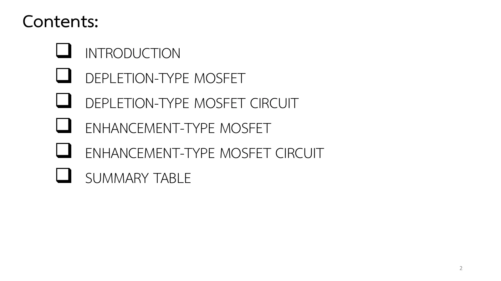
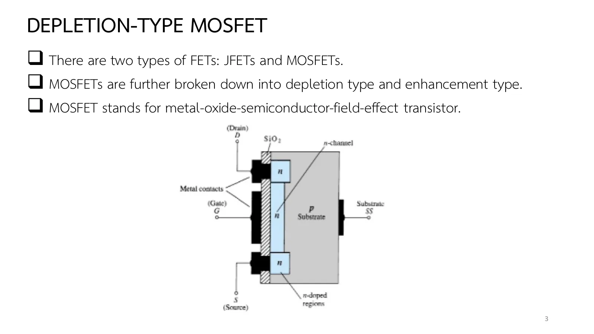
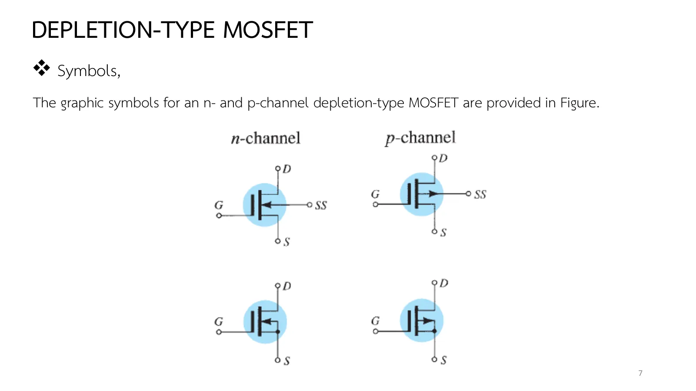

มอสเฟตแบบดีพลีชัน Depletion-type MOSFET
Depletion-type MOSFET An insulated gate over a built-in channel: Shockley's curve on both sides of zero
สไลด์บทที่ 6 หน้า 2–8 มอสเฟต (metal-oxide-semiconductor field-effect transistor, MOSFET) ต่างจาก JFET ตรงที่เกตเป็นแผ่นโลหะบนชั้นฉนวนซิลิคอนไดออกไซด์ (SiO₂) ไม่มีรอยต่อ p–n กับช่องเลย อิมพีแดนซ์ขาเข้าจึงสูงมากและ \(V_{GS}\) จะเป็นบวกก็ได้ แบบดีพลีชัน (depletion type) มีช่องสร้างมาแต่แรก: \(V_{GS}\) ลบทำให้ช่องแคบลง (ดีพลีชันโหมด เหมือน JFET) \(V_{GS}\) บวกดึงอิเล็กตรอนเพิ่มเข้าช่อง (เอนแฮนซ์เมนต์โหมด) กระแสเกิน \(I_{DSS}\) ได้ โดยสมการของ Shockley ยังใช้ได้ทั้งสองฝั่ง หน้านี้มีภาพตัดขวางของช่องใต้เกตที่ปรับ \(V_{GS}\), \(V_{DS}\) ได้ (ส่วน A) Example 6.3 การอ่านรูป 6.26 ใบข้อมูล 2N3797 อุปกรณ์ p-channel และแบบฝึกเพิ่ม
Chapter 6 slides pp. 2–8. The metal-oxide-semiconductor field-effect transistor (MOSFET) differs from the JFET in its gate: a metal plate on an insulating layer of silicon dioxide (SiO₂), with no p–n junction to the channel at all, so the input impedance is very high and \(V_{GS}\) may be positive. The depletion type has a channel built in: a negative \(V_{GS}\) narrows it (the depletion mode, as in a JFET), a positive one draws extra electrons into it (the enhancement mode) and the current exceeds \(I_{DSS}\), with Shockley's equation holding on both sides. This page has a cross-section of the channel under the gate with adjustable \(V_{GS}\), \(V_{DS}\) (section A), Example 6.3, a reading of Fig. 6.26, the 2N3797 data sheet, the p-channel device, and more practice.
ประเด็นสำคัญของหน้านี้
- โครงสร้าง (สไลด์หน้า 3–4, รูป 6.24): สารฐาน (substrate) ชนิด p มีบ่อสาร n สองบ่อใต้ขั้วซอร์สและเดรน เชื่อมด้วยช่องสาร n ที่สร้างมาแต่แรก เกตเป็นแผ่นโลหะบนชั้น SiO₂ บางมาก: "ไม่มีการต่อทางไฟฟ้าระหว่างเกตกับช่อง" ชั้นฉนวนนี้คือที่มาของอิมพีแดนซ์ขาเข้าที่สูงกว่า JFET อีก และ \(I_G\) = 0 สำหรับกระแสตรง ขั้วที่สี่ SS คือสารฐาน ปกติต่อกับซอร์ส
- \(V_{GS}\) = 0 (สไลด์หน้า 5, รูป 6.25–6.26): อิเล็กตรอนในช่องถูกดึงไปเดรน กระแสคือ \(I_{DSS}\) เหมือน JFET · \(V_{GS}\) < 0 (ดีพลีชันโหมด): ศักย์ลบที่เกตผลักอิเล็กตรอนลงไปรวมตัวกับโฮลของสารฐาน พาหะน้อยลง กระแสลดจนศูนย์ที่ \(V_P\) · \(V_{GS}\) > 0 (เอนแฮนซ์เมนต์โหมด): ศักย์บวกดึงอิเล็กตรอน (พาหะข้างน้อยของสารฐาน) เข้ามาเพิ่ม กระแสเกิน \(I_{DSS}\) และพุ่งเร็ว (รูป 6.26: +1 V ให้ 10.9 mA, +4 V ให้ 22.2 mA) ต้องระวังพิกัดกระแสสูงสุด
- สมการเดิม: สมการของ Shockley ใช้ได้ทั้งสองฝั่ง แค่ใส่เครื่องหมายของ \(V_{GS}\) ให้ถูก ร่างเส้นโค้งด้วยจุดของตาราง 6.1 แล้วเติมจุดฝั่งบวกอย่างระมัดระวัง (Example 6.3)
- p-channel (สไลด์หน้า 6, รูป 6.29): สลับสาร ขั้วแรงดันและทิศกระแสกลับหมด \(V_P\) บวก ฝั่ง \(V_{GS}\) ลบคือเอนแฮนซ์เมนต์
- สัญลักษณ์ (สไลด์หน้า 7, รูป 6.30): ช่องว่างระหว่างเกตกับส่วนอื่นแทนฉนวน แท่งทึบแทนช่องที่มีอยู่ ลูกศรที่สารฐานชี้เข้า (n-channel) หรือออก (p-channel) มีแบบสี่ขา (SS แยก) และสามขา (SS ต่อซอร์ส ใช้ในบทที่ 7)
- ใบข้อมูล (สไลด์หน้า 8, 2N3797): ให้ \(I_{DSS}\), \(V_{GS(\text{off})}\) เหมือน JFET และเพิ่มจุด \(I_{D(\text{on})}\) ที่ \(V_{GS}\) บวก เพราะกระแสเกิน \(I_{DSS}\) ได้ · การจับต้อง (ตำราหัวข้อ 6.9): ชั้นฉนวนบางมากพังได้ด้วยไฟฟ้าสถิต จึงมีวงแหวนลัดขา ควรแตะกราวด์ก่อนจับ และหลายรุ่นมีซีเนอร์ไดโอดป้องกันที่เกต
Key points of this page
- Construction (slides pp. 3–4, Fig. 6.24): a p-type substrate with two n-doped wells under the source and drain contacts, linked by an n-channel built in from the start. The gate is a metal plate on a very thin SiO₂ layer: "there is no direct electrical connection between the gate and the channel". That insulating layer gives an input impedance even higher than a JFET's, and \(I_G\) = 0 for dc. The fourth terminal SS is the substrate, normally tied to the source.
- \(V_{GS}\) = 0 (slide p. 5, Figs. 6.25–6.26): channel electrons are drawn to the drain and the current is \(I_{DSS}\), as for a JFET. \(V_{GS}\) < 0 (depletion mode): the negative gate pushes electrons down to recombine with substrate holes; fewer carriers, and the current falls to zero at \(V_P\). \(V_{GS}\) > 0 (enhancement mode): the positive gate draws extra electrons (the substrate's minority carriers) in; the current exceeds \(I_{DSS}\) and rises fast (Fig. 6.26: +1 V gives 10.9 mA, +4 V 22.2 mA), so mind the maximum current rating.
- The same equation: Shockley's equation holds on both sides as long as the sign of \(V_{GS}\) is kept; sketch the curve from the points of Table 6.1 and add a conservative point on the positive side (Example 6.3).
- p-channel (slide p. 6, Fig. 6.29): the materials swap and every polarity and current direction turns round; \(V_P\) is positive and the negative \(V_{GS}\) side is the enhancement side.
- Symbols (slide p. 7, Fig. 6.30): a gap between the gate and the rest for the insulation, a solid bar for the existing channel, the substrate arrow in (n-channel) or out (p-channel); four-terminal (SS separate) and three-terminal (SS tied to the source, used in chapter 7) versions.
- Data sheet (slide p. 8, 2N3797): \(I_{DSS}\) and \(V_{GS(\text{off})}\) as for a JFET, plus an \(I_{D(\text{on})}\) point at a positive \(V_{GS}\), since the current can exceed \(I_{DSS}\). Handling (book §6.9): the very thin insulator breaks down under static charge, hence the shorting ring on the leads, touching ground before handling, and the Zener protection built into many devices.


![Chapter 6 slide 4, Depletion-Type MOSFET, basic construction: the source and drain terminals are connected through metallic contacts to n-doped regions linked by an n-channel as shown in the figure; the gate is also connected to a metal contact surface but remains insulated from the n-channel by a very thin silicon dioxide (SiO2) layer; there is no direct electrical connection between the gate terminal and the channel of a MOSFET; it is the insulating layer of SiO2 in the MOSFET construction that accounts for the very desirable high input impedance of the device. Figure 6.24 repeated.](slides/ch6/p04.webp)
ช่องใต้เกตฉนวน: ดีพลีชันโหมดและเอนแฮนซ์เมนต์โหมด
The channel under the insulated gate: depletion and enhancement modes
![Chapter 6 slide 5, Depletion-Type MOSFET, basic operation and characteristics: in the figure the gate-to-source voltage is set to zero volts by the direct connection from one terminal to the other, and a voltage V_DS is applied across the drain-to-source terminals. Figure 6.26: the transfer curve from V_P = −6 V through I_DSS = 8 mA up to 10.9 mA at +1 V with the depletion mode and enhancement mode marked, and the drain characteristics for V_GS = +1, 0, −1, −2, −3, −4, −5, −6 V; Fig. 6.25: the device with V_GS = 0 V and V_DD.](slides/ch6/p05.webp)

ภาพตัดขวางคือรูป 6.24: สารฐาน p (ชมพู) บ่อ n ของซอร์สและเดรน ชั้น SiO₂ (เหลือง) ใต้แผ่นเกต และช่อง n (ฟ้า) ใต้ฉนวน เลื่อน \(V_{GS}\) ไปทางลบแล้วช่องแคบลง (ดีพลีชันโหมด) ไปทางบวกแล้วกว้างขึ้นและมีอิเล็กตรอนมากขึ้น (เอนแฮนซ์เมนต์โหมด) โดยไม่มีกระแสเกตเลยเพราะมีฉนวนกั้น \(V_{DS}\) ทำให้ช่องแคบลงทางด้านเดรนจนพินช์ออฟเหมือน JFET กราฟขวาคือรูป 6.26 ของอุปกรณ์ตัวเดียวกัน (\(I_{DSS}\) = 8 mA, \(V_P\) = −6 V) พร้อมเส้น \(V_{GS}\) = +1 V ที่ JFET ไม่มี
The cross-section is Fig. 6.24: the p-substrate (pink), the n-wells of the source and drain, the SiO₂ layer (yellow) under the gate plate, and the n-channel (blue) under the insulator. Move \(V_{GS}\) negative and the channel narrows (depletion mode); move it positive and it widens with more electrons (enhancement mode), with no gate current at all because of the insulator. \(V_{DS}\) narrows the channel at the drain end until it pinches off, as in a JFET. The right graph is Fig. 6.26 for the same device (\(I_{DSS}\) = 8 mA, \(V_P\) = −6 V), with the \(V_{GS}\) = +1 V curve a JFET does not have.
Example 6.3: เส้นโค้งถ่ายโอนที่ต่อเข้าฝั่งบวก
Example 6.3: a transfer curve continued into the positive side
จงร่างลักษณะสมบัติถ่ายโอนของมอสเฟตแบบดีพลีชัน n-channel ที่มี \(I_{DSS}\) = 10 mA และ \(V_P\) = −4 V
Sketch the transfer characteristics of an n-channel depletion-type MOSFET with \(I_{DSS}\) = 10 mA and \(V_P\) = −4 V.
ภาพจำลองคือมอสเฟตที่มี \(V_{GG}\) ตั้ง \(V_{GS}\) ผ่าน \(R_G\) และ \(V_{DD}\) = 20 V คร่อมเดรน–ซอร์ส ในขั้นสุดท้ายแหล่งจ่ายที่เกตกลับขั้วให้ \(V_{GS}\) = +1 V ลองตอบก่อน
The simulation is a MOSFET whose \(V_{GS}\) is set by \(V_{GG}\) through \(R_G\), with \(V_{DD}\) = 20 V across drain–source; in the last step the gate supply is turned round for \(V_{GS}\) = +1 V. Try it first.
อ่านรูป 6.26: สองโหมดของอุปกรณ์เดียวกัน
Reading Fig. 6.26: the two modes of one device
อุปกรณ์ของรูป 6.26 (\(I_{DSS}\) = 8 mA, \(V_P\) = −6 V) จงหา \(I_D\) เมื่อ \(V_{GS}\) = −1 V, +1 V และ +4 V แล้วบอกว่าแต่ละค่าอยู่ในโหมดใด
For the device of Fig. 6.26 (\(I_{DSS}\) = 8 mA, \(V_P\) = −6 V) find \(I_D\) at \(V_{GS}\) = −1 V, +1 V and +4 V, and name the mode in each case.
แผงข้างภาพคือรูป 6.26 พร้อมจุดทำงาน ลองตอบก่อน
The side panel is Fig. 6.26 with the operating point. Try it first.
ใบข้อมูล 2N3797: สมการของ Shockley กับจุด \(I_{D(\text{on})}\)
The 2N3797 sheet: Shockley's equation against the \(I_{D(\text{on})}\) point
![Chapter 6 slide 8, Depletion-Type MOSFET, datasheet: the 2N3797 Motorola n-channel depletion MOSFET for low-power audio, with maximum ratings (V_DS 20 V, V_GS ±10 V, I_D 20 mA, P_D 200 mW), off characteristics (drain–source breakdown 20 V min, gate reverse current, gate–source cutoff voltage V_GS(off) −5 V typ, −7 V max) and on characteristics (zero-gate-voltage drain current I_DSS 2.0 min, 2.9 typ, 6.0 max mA; on-state drain current I_D(on) at V_GS = +3.5 V: 9.0 min, 14 typ, 18 max mA), and the case drawing.](slides/ch6/p08.webp)
ใบข้อมูล 2N3797 ให้ \(I_{DSS}\) ค่าตัวแบบ 2.9 mA (2–6 mA), \(V_{GS(\text{off})}\) ค่าตัวแบบ −5 V (−7 V สูงสุด) และ \(I_{D(\text{on})}\) ที่ \(V_{GS}\) = +3.5 V เท่ากับ 9–18 mA (ค่าตัวแบบ 14 mA) จงใช้สมการของ Shockley กับค่าตัวแบบทำนาย \(I_D\) ที่ +3.5 V แล้วเทียบกับใบข้อมูล
The 2N3797 sheet gives \(I_{DSS}\) typically 2.9 mA (2–6 mA), \(V_{GS(\text{off})}\) typically −5 V (−7 V max) and \(I_{D(\text{on})}\) at \(V_{GS}\) = +3.5 V of 9–18 mA (typically 14 mA). Use Shockley's equation with the typical values to predict \(I_D\) at +3.5 V and compare with the sheet.
ลองตอบก่อน
Try it first.
มอสเฟตแบบดีพลีชัน p-channel
The p-channel depletion-type MOSFET
อุปกรณ์ของรูป 6.29 (p-channel, \(I_{DSS}\) = 6 mA, \(V_P\) = +6 V) จงหา \(I_D\) ที่ \(V_{GS}\) = +3 V และ −1 V
For the device of Fig. 6.29 (p-channel, \(I_{DSS}\) = 6 mA, \(V_P\) = +6 V) find \(I_D\) at \(V_{GS}\) = +3 V and −1 V.
ในภาพจำลองแหล่งจ่ายทั้งสองกลับขั้วและลูกศรสารฐานชี้ออก ลองตอบก่อน
In the simulation both supplies are turned round and the substrate arrow points out. Try it first.
ฝึกเพิ่ม
More practice
ลองทำดู 1 — ข้ามศูนย์
- ส่วน A ตั้ง \(V_{DS}\) = 15 V แล้วเลื่อน \(V_{GS}\) จาก −6 V ถึง +2 V ช้า ๆ: ช่องเปิดที่ −6 V (\(V_P\)) กว้างเต็มที่ 0 V และกว้างเกินนั้นในฝั่งบวก กระแสผ่าน 8 mA ที่ 0 V โดยไม่มีอะไรพิเศษเกิดขึ้น นี่คือความต่างจาก JFET ซึ่งรอยต่อเกตจะนำกระแสที่ +0.7 V
- ที่ \(V_{GS}\) = +2 V ลด \(V_{DS}\) จาก 15 V ลงมา: พินช์ออฟเกิดที่ \(V_{DS} = V_{GS} - V_P\) = 8 V สูงกว่าที่ \(V_{GS}\) = 0 (6 V) การไบแอสฝั่งบวกต้องการ \(V_{DS}\) มากขึ้นเพื่ออยู่ในย่านอิ่มตัว
ลองทำดู 2 — ใบข้อมูลกับแบบจำลอง
- ข้อ 3: ค่าต่ำสุดของใบข้อมูล (\(I_{DSS}\) = 2 mA, \(V_P\) = −5 V) ให้ 2(1.7)² = 5.8 mA ที่ +3.5 V ต่ำกว่า \(I_{D(\text{on})}\) ขั้นต่ำ 9 mA ทุกชุดค่าของ Shockley ทำนายต่ำกว่าใบข้อมูล: ในฝั่งเอนแฮนซ์เมนต์เส้นโค้งจริงชันกว่าพาราโบลา
- ข้อ 4: เขียนรูป 6.29b ด้วยสี่จุดของตาราง 6.1 แล้วเติม (−1 V, 8.17 mA): ภาพสะท้อนของ Example 6.3
Try this 1 — across zero
- In section A set \(V_{DS}\) = 15 V and slide \(V_{GS}\) slowly from −6 V to +2 V: the channel opens at −6 V (\(V_P\)), is full width at 0 V, and wider still on the positive side; the current passes 8 mA at 0 V with nothing special happening. This is the difference from a JFET, whose gate junction would conduct at +0.7 V.
- At \(V_{GS}\) = +2 V lower \(V_{DS}\) from 15 V: pinch-off comes at \(V_{DS} = V_{GS} - V_P\) = 8 V, higher than at \(V_{GS}\) = 0 (6 V); biasing on the positive side needs more \(V_{DS}\) to stay in saturation.
Try this 2 — the sheet against the model
- Problem 3: the sheet's minimum values (\(I_{DSS}\) = 2 mA, \(V_P\) = −5 V) give 2(1.7)² = 5.8 mA at +3.5 V, below the 9 mA minimum \(I_{D(\text{on})}\). Every set of values makes Shockley predict less than the sheet: on the enhancement side the real curve is steeper than the parabola.
- Problem 4: draw Fig. 6.29b from the four points of Table 6.1 and add (−1 V, 8.17 mA): the mirror image of Example 6.3.